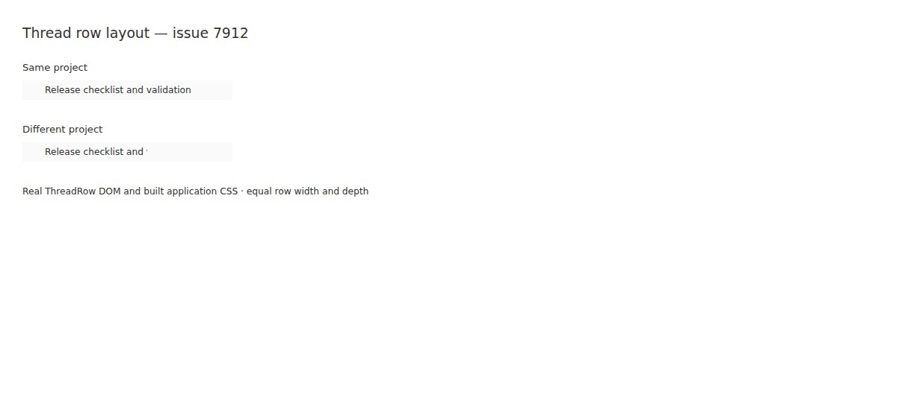
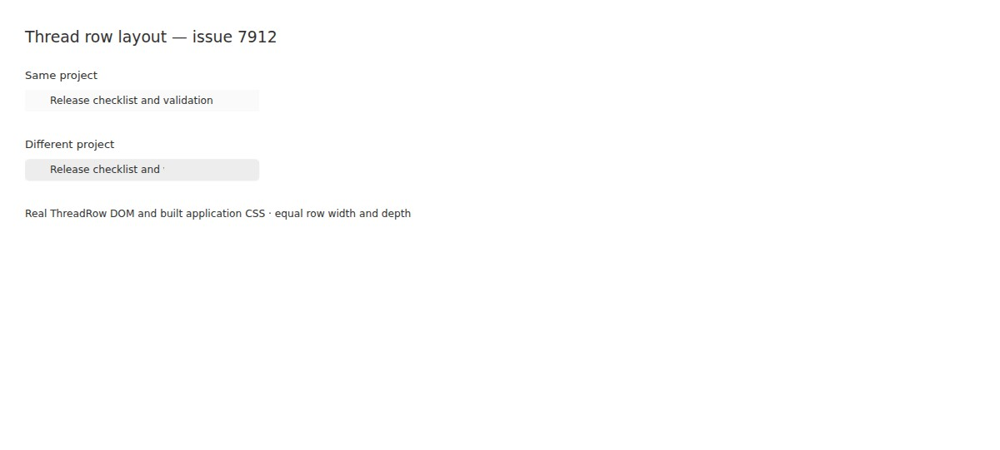
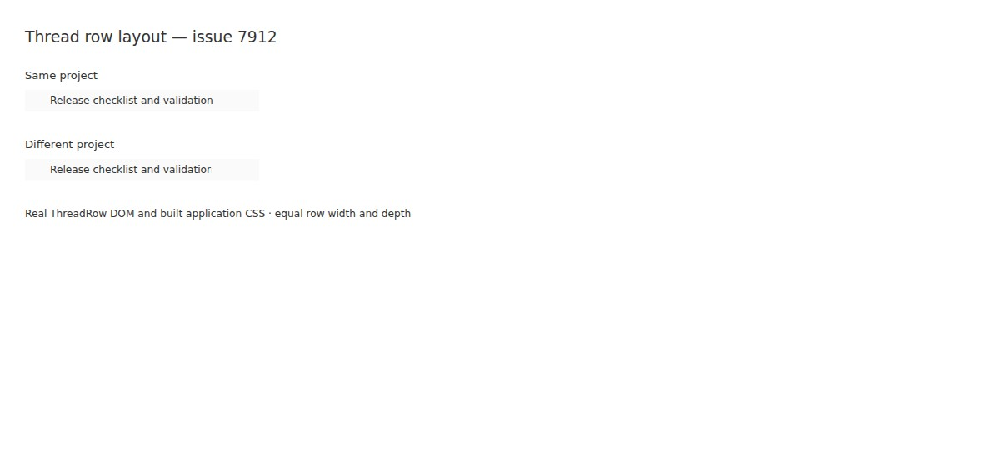

#7912 · Hidden action padding on cross-project child rows
Verdict: REPRODUCED · Root-cause confidence: high · reproduction label: confirmed-repro
1. TL;DR
A child row marked as belonging to another project loses title width even while its quick actions are invisible. The production component chooses unconditional right padding merely because a cross-project marker exists. In a 300px-wide rendered row with two quick actions, that padding is 60px; an equal-depth same-project control reserves 0px. Removing only the cross-project condition restores the shared hover-dependent inset and keeps the project marker unobstructed when actions appear. Existing parent/disclosure behavior is deliberately unchanged.
2. Claims vs findings
| Claim | Status | Evidence |
|---|---|---|
| Cross-project children reserve space while actions are hidden. | Verified | Both trusted-base runs: action overlay opacity 0, cross-project padding 60px, control padding 0px. |
| This causes earlier title truncation, not just indentation. | Verified | Same depth and 300px width: control title 209px/209px; cross-project title 146px/209px (client/scroll widths). |
| More quick actions increase the reservation. | Verified in source | The production inset is spacing × 7.5 × quick-action count; the fixture uses Pin and Archive, not an unavailable Delete fake. |
| Current parent rows already avoid permanent space. | Not true at this base | The same predicate also reserves space for parents with children. Existing parent-disclosure tests explicitly require it. Historical pull-request behavior was not assumed. |
| Specific macOS desktop release and coordinator tree. | Not rerun | This is a rendered production-component/CSS reproduction, not a full macOS desktop or real-provider session. |
3. Environment and boundaries
- Trusted public repository: get-bb/bb; fetched origin/main and canonical repository main both resolve to the base commit above.
- Linux x86_64 execution environment; Node 22.19.0; pnpm workspace frozen install; real production ThreadRow source and built application CSS.
- Headless Chromium controlled through BB Browser Automation. Each fixture is loaded into a new about:blank document. No imported store, production database, account data, or agent turn is used.
- The existing Plugin SDK test runtime supplies synthetic thread data and icon/menu boundaries. Screenshots show a component fixture; icon glyphs and menu behavior are not evidence of full-app rendering.
- Headless Chromium reports hover:none. The test explicitly selects the production hover-capable CSS media branches through CSSOM, without changing their declarations. Real pointer movement then exercises :hover.
- A fresh isolated development server was also built and launched (frontend 18949, API 26949, host daemon 34949), then stopped. Browser access to its network namespace was unavailable, so no live-app verification is claimed.
4. Minimal reproduction
Save the three inline code blocks below as capture.patch, build-browser-fixture.mjs, and layout-check.js, then run these commands from a trusted checkout. Replace only the saved-file path, enrolled host, and returned browser session ID. The capture patch is investigator-created instrumentation: it renders two instances of the actual component through its existing test harness. It changes no production layout. Run sequentially because the capture output uses one temporary filename.
git fetch origin main BASE=fab82665a3299fae8910f55d7519a3b034a03b9a WORK=$(mktemp -d /tmp/slopcop-7912-XXXXXX) git worktree add --detach "$WORK/base" "$BASE" cd "$WORK/base" pnpm install --frozen-lockfile --prefer-offline pnpm exec turbo run build:types build:runtime --filter=@get-bb/plugin-sdk pnpm exec turbo run build git apply /path/to/saved/capture.patch pnpm exec turbo run test --filter=bb-plugin-thread-list -- app/rows/ThreadRow.test.tsx -t "captures cross-project layout evidence" node /path/to/saved/build-browser-fixture.mjs "$PWD" /tmp/issue-7912-rows.html /tmp/fixture-7912.js bb browser-automation open --backend local --headless --machine <enrolled-host-id> --json bb file write /tmp/issue-7912/fixture.js --host <enrolled-host-id> --create-parents --stdin < /tmp/fixture-7912.js bb file write /tmp/issue-7912/check.js --host <enrolled-host-id> --stdin < /path/to/saved/layout-check.js bb browser-automation run <session-id> --script-file /tmp/issue-7912/fixture.js --script-host <enrolled-host-id> --json bb browser-automation run <session-id> --script-file /tmp/issue-7912/check.js --script-host <enrolled-host-id> --json
Expected: invisible quick actions reserve no extra width; on hover the actions become visible and the project marker remains hit-testable. Actual on trusted main:
{"state":"rest","rows":[{"kind":"same","padding":0,"titleWidth":209,"titleScroll":209,"actionsOpacity":"0","markerWidth":null,"gap":6},{"kind":"cross","padding":60,"titleWidth":146,"titleScroll":209,"actionsOpacity":"0","markerWidth":20,"gap":6}]}
Error: Hidden actions reserve 60px on the cross-project row; control reserves 0px
Browser test exitCode: 1
The action overlay opacity is 0 while the cross-project content still has 60px padding. The 20px project marker and 6px gap are legitimate visible content, not action-space loss.


capture.patch — temporary render instrumentation
diff --git a/plugins/thread-list/app/rows/ThreadRow.test.tsx b/plugins/thread-list/app/rows/ThreadRow.test.tsx
index 20fc98d3ee..6dbbd9e42a 100644
--- a/plugins/thread-list/app/rows/ThreadRow.test.tsx
+++ b/plugins/thread-list/app/rows/ThreadRow.test.tsx
@@ -8,6 +8,7 @@ import {
waitFor,
} from "@testing-library/react";
import { afterEach, describe, expect, it, vi } from "vitest";
+import { writeFileSync } from "node:fs";
import { getDefaultStore } from "jotai";
import { DndContext, useDraggable } from "@dnd-kit/core";
import { CompactViewportOverrideProvider } from "@/components/ui/hooks/use-compact-viewport";
@@ -1176,6 +1177,31 @@ describe("ThreadRow", () => {
expect(onLinkClick).toHaveBeenCalledTimes(1);
});
+ it("captures cross-project layout evidence", () => {
+ getDefaultStore().set(preferenceValueAtom("rowActions"), [
+ "bb--core/pin",
+ "bb--core/archive",
+ ]);
+ const title = "Release checklist and validation";
+ const captures: string[] = [];
+ for (const crossProjectId of [null, "proj_other"]) {
+ const slot = renderThreadRow({
+ crossProjectId,
+ projects: [makePluginProject({ id: "proj_other", name: "Sample repository" })],
+ thread: createThread({
+ title,
+ displayTitle: title,
+ parentThreadId: "thr_parent",
+ projectId: crossProjectId ?? "proj_test",
+ }),
+ });
+ expect(screen.getByRole("link", { name: `Open ${title}` })).not.toBeNull();
+ captures.push(`<section data-fixture="${crossProjectId === null ? "same" : "cross"}"><h2>${crossProjectId === null ? "Same project" : "Different project"}</h2>${slot.container.innerHTML}</section>`);
+ cleanup();
+ }
+ writeFileSync("/tmp/issue-7912-rows.html", captures.join("\n"));
+ });
+
it("omits the cross-project marker for same-project rows", () => {
const { container } = renderThreadRow({});
expect(
build-browser-fixture.mjs — use actual built application CSS
import { readFileSync, writeFileSync, readdirSync } from "node:fs";
import { gzipSync } from "node:zlib";
import { join } from "node:path";
const [checkout, markupFile, output] = process.argv.slice(2);
const assets = join(checkout, "apps/app/dist/assets");
const stylesheet = readdirSync(assets).find((name) => /^index-.*\.css$/.test(name));
const css = readFileSync(join(assets, stylesheet), "utf8");
const rows = readFileSync(markupFile, "utf8");
const html = '<!doctype html><html><head><meta charset="utf-8"><style>' + css + '</style><style>body{padding:32px;font-family:Arial,sans-serif}main{width:300px}section{margin-bottom:32px}h1{font-size:20px;margin-bottom:24px}h2{font-size:14px;margin-bottom:8px}section>div{width:300px;background:var(--sidebar)}footer{margin-top:24px;font-size:13px}</style></head><body><h1>Thread row layout — issue 7912</h1><main>' + rows + '</main><footer>Real ThreadRow DOM and built application CSS · equal row width and depth</footer></body></html>';
const compressed = gzipSync(html).toString("base64");
writeFileSync(output, 'const page = await browser.getPage("main");\nawait page.goto("about:blank");\nconst html = await page.evaluate(async (encoded) => {const bytes=Uint8Array.from(atob(encoded), character=>character.charCodeAt(0));return await new Response(new Blob([bytes]).stream().pipeThrough(new DecompressionStream("gzip"))).text();}, ' + JSON.stringify(compressed) + ');\nawait page.setContent(html);\nconsole.log(await page.evaluate(()=>({hover:matchMedia("(hover:hover)").matches,rows:[...document.querySelectorAll("section")].map(section=>({kind:section.dataset.fixture,title:section.querySelector(".bb-thread-title").textContent}))})));\n');
layout-check.js — focused browser regression test
const page = await browser.getPage("main");
await page.evaluate(() => {
function visit(rules) {
for (const rule of rules) {
if (rule.media) {
rule.media.mediaText = rule.media.mediaText
.replace(/\(hover:\s*none\)/g, "(width < 0px)")
.replace(/\(hover:\s*hover\)/g, "(width >= 0px)");
}
if (rule.cssRules) visit(rule.cssRules);
}
}
for (const sheet of document.styleSheets) visit(sheet.cssRules);
});
await page.mouse.move(700, 500);
const idle = await page.evaluate(() =>
[...document.querySelectorAll("section")].map((section) => {
const title = section.querySelector(".bb-thread-title");
const content = section.querySelector("a[data-sidebar-thread-id]").parentElement;
const marker = section.querySelector("[data-sidebar-thread-cross-project]");
const overlay = section.querySelector(".bb-sidebar-hover-actions");
return {
kind: section.dataset.fixture,
padding: parseFloat(getComputedStyle(content).paddingRight),
titleWidth: title.clientWidth,
titleScroll: title.scrollWidth,
actionsOpacity: getComputedStyle(overlay).opacity,
markerWidth: marker?.getBoundingClientRect().width ?? null,
gap: parseFloat(getComputedStyle(content).columnGap) || 0,
};
}),
);
console.log(JSON.stringify({ state: "rest", rows: idle }));
const control = idle.find((row) => row.kind === "same");
const cross = idle.find((row) => row.kind === "cross");
if (cross.actionsOpacity !== "0") {
throw new Error("Rest-state check requires hidden quick actions");
}
if (cross.padding !== control.padding) {
throw new Error("Hidden actions reserve " + cross.padding + "px on the cross-project row; control reserves " + control.padding + "px");
}
if (cross.titleWidth + cross.markerWidth + cross.gap < control.titleWidth) {
throw new Error("Title loses more width than the visible project marker and gap require");
}
const location = await page.evaluate(() => {
const rectangle = document.querySelector('[data-fixture="cross"] [data-sidebar-rename-row]').getBoundingClientRect();
return { x: rectangle.x + 100, y: rectangle.y + rectangle.height / 2 };
});
await page.mouse.move(location.x, location.y);
const hover = await page.evaluate(() => {
const section = document.querySelector('[data-fixture="cross"]');
const marker = section.querySelector("[data-sidebar-thread-cross-project]");
const rectangle = marker.getBoundingClientRect();
const hit = document.elementFromPoint(rectangle.x + rectangle.width / 2, rectangle.y + rectangle.height / 2);
return {
padding: parseFloat(getComputedStyle(section.querySelector("a[data-sidebar-thread-id]").parentElement).paddingRight),
markerHit: hit === marker || marker.contains(hit),
actionsOpacity: getComputedStyle(section.querySelector(".bb-sidebar-hover-actions")).opacity,
};
});
console.log(JSON.stringify({ state: "hover", ...hover }));
if (hover.padding <= 0 || !hover.markerHit || hover.actionsOpacity !== "1") {
throw new Error("Hover must make room for quick actions without covering the project marker");
}
console.log("PASS: no hidden action reservation; hover preserves the project marker");
5. Root cause
ThreadRow.tsx:421–422 sets reserveActionSpace from the presence of a cross-project label, irrespective of pointer/focus/menu state:
const reserveActionSpace = crossProjectLabel !== null || (isParentRow && hasChildren);
ThreadRow.tsx:541–545 selects unconditional padding instead of the shared hover-dependent inset class. ThreadRow.tsx:197–201 calculates that inset from quick-action count. At the default 4px spacing, two actions cause 4 × 7.5 × 2 = 60px of lost title width.
theme.css:326–342 provides the shared state-dependent padding, and its hover:none override handles non-hover devices. The cross-project title and marker in ThreadRow.tsx:635–665 still need their own visible width. This explains why removing action padding need not make every title as wide as a row without a marker.
parent-disclosure contract test verifies that current parent rows reserve their existing disclosure/action area. The fix does not change that separate contract.
6. Proposed and tested fix
const reserveActionSpace = isParentRow && hasChildren;
Cross-project leaf rows then use the existing hover-dependent inset just like other child rows. Keep the marker adjacent to the title; no icon relocation, new overlay mechanism, public API, settings, or product decision is necessary. Parent rows with children remain unchanged. This is the minimal width-reservation repair, not the larger pinned-icon/masked-overlay redesign.
{"state":"rest","rows":[{"kind":"same","padding":0,"titleWidth":209,"titleScroll":209,"actionsOpacity":"0","markerWidth":null,"gap":6},{"kind":"cross","padding":0,"titleWidth":206,"titleScroll":209,"actionsOpacity":"0","markerWidth":20,"gap":6}]}
{"state":"hover","padding":60,"markerHit":true,"actionsOpacity":"1"}
PASS: no hidden action reservation; hover preserves the project marker
Browser test exitCode: 0

7. Verification
The same investigator repeated the reproduction in a second, initially clean detached trusted checkout at fab82665a3299fae8910f55d7519a3b034a03b9a, in a new temporary worktree (WORK/base). A new frozen install/build and fresh JSDOM render regenerated the fixture from unchanged production source; a fresh browser document repeated the layout regression. No persistent data directory or additional service ports are needed for this render-only test. This is a second clean run, not independent verification.
{"state":"rest","rows":[{"kind":"same","padding":0,"titleWidth":209,"titleScroll":209,"actionsOpacity":"0","markerWidth":null,"gap":6},{"kind":"cross","padding":60,"titleWidth":146,"titleScroll":209,"actionsOpacity":"0","markerWidth":20,"gap":6}]}
Error: Hidden actions reserve 60px on the cross-project row; control reserves 0px
Browser test exitCode: 1
Both runs fail for the same 60px-vs-0px hidden-padding assertion. The corrected fixed-state test allows the visible marker and gap to consume legitimate width; it does not incorrectly demand equal title widths for rows with different visible content.
- Focused browser regression: fails on trusted main, passes after the one-line production-expression change, checks idle overlay opacity, reclaimed width, hover padding, visible action overlay, and project-marker hit testing.
- Full relevant suite:
pnpm exec turbo run test lint typecheck --filter=bb-plugin-thread-list— 38 test files and 455 tests pass; lint and typecheck pass. - Original ThreadRow suite on unchanged main: 96 tests pass, demonstrating the coverage gap. Existing project-marker click and parent-disclosure tests also pass after the fix.
pnpm exec oxfmt plugins/thread-list/app/rows/ThreadRow.tsxandgit diff --checkpass.- Fix size: one existing subsystem, one file, 1 addition + 2 deletions = 3 changed text lines; no binaries, dependencies, generated files, lockfile, migration, persisted data, or public contracts change.
- The focused browser test and its rendering instrumentation are embedded in this report, not in the package’s CI test discovery. No full macOS desktop, touch-device, or live coordinator-tree verification is claimed.
8. Pull requests and related reports
No open pull request linked to this issue was present in its GitHub cross-reference timeline or an open-PR number search before the fix. No linked branch or patch was checked out or executed. Historical comparisons supplied in the issue were treated as claims, not trusted code or current behavior.
9. Appendix and trust handling
All source links refer to the recorded trusted commit. Issue text and links were treated as untrusted evidence; no issue-provided command, patch, attachment, script, or external URL was executed or fetched. Only trusted main and investigator-created instrumentation/fix ran. Public artifacts contain synthetic rows only.
Initial broad builds needed explicit Plugin SDK runtime/type generation to resolve workspace packages; after that, all 72 build tasks completed successfully in both checkouts. The unrelated generated web route tree was restored before the fix was prepared. Raw dev logs and private filesystem paths are deliberately not published.
Final classification: Bug · Medium · Low · ui · confirmed-repro. No human approval or workflow was used. The eventual fix PR is linked from the issue’s single SlopCop summary comment.